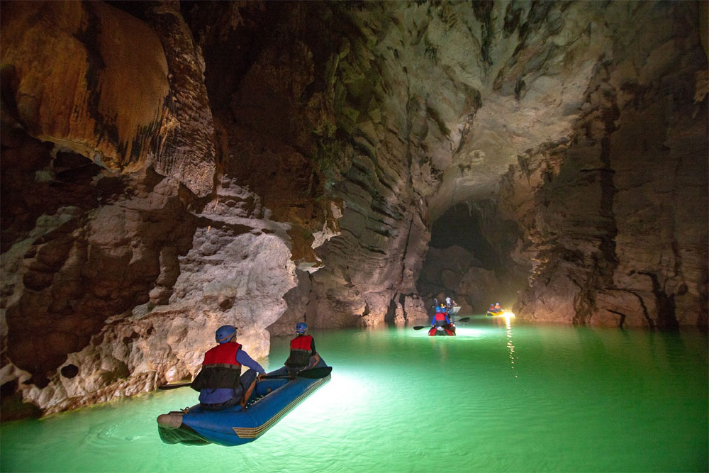

Động phong nha - Đệ nhất kỳ quan động
Động phong nha là danh thắng tiêu biểu nhất của hệ thống hang động thuộc quần thể danh thắng Phong nha- Kẻ Bàngđược bình chọn là một trong những hang động đẹp nhất thế giới với các tiêu chí: Sông ngầm dài nhất, Hồ nước ngầm đẹp nhất.
Cửa hang cao và rộng nhất, Các bãi cát, bãi đá ngầm đẹp nhất, Hang khô rộng và đẹp nhất, Hệ thống thạch nhũ kỳ ảo và tráng lệ nhất, Hang động nước dài nhất. Động Phong Nha là một điểm đến được nhiều du khách lựa chọn trong chuyến du lịch Quảng Bình.
Toàn cảnh bến thuyền Sông Son nơi bắt đầu tham quan Động Phong Nha
Từ Thành Phố Đồng Hới tỉnh Quảng Bình đi đường Phan Đình Phùng theo đường Hồ Chí Minh để bắt đầu chuyến du lịch khám phá động Phong Nha “Di sản thiên nhiên thế giới Phong Nha-Kẻ Bàng”, đến Phong Nha, Du khách xuống bến thuyền đi theo sông Son vào động Phong Nha.
Sông Son rộng chừng 35-40 mét, nước xanh ngắt, trong thấu đáy, nhìn rõ cả những đàn cá đang bơi. Nước thì xanh như màu xanh đồng, nhưng lại gọi là sông Son vì vào mùa mưa, nước mưa bào mòn đất đá ở các triền núi đổ xuống làm nước sông đỏ như màu gạch son. Nhưng có một câu chuyện ly kỳ khác, có lẽ đã ra đời từ thời khai thiên lập địa, cũng giải thích về tên của dòng sông Son.
Chuyện kể ngày xưa, có vị tiên sư đại pháp người Trời thường xuống du ngoạn cảnh hạ giới, thấy yêu mến nơi này bèn ở lại rồi dạy dân cách làm ăn. Một năm kia xảy ra đại hạn, muôn vật khô héo; để cứu dân, vị tiên sư đại pháp lén về Trời khơi trộm nguồn nước từ thiên cung chảy xuống nơi là dòng sông Son bây giờ.
Dòng nước tưới mát cỏ cây, cứu sống muôn loài, nhưng vị đại sư bị triệu về Trời chịu hình phạt. Dân làng cảm kích tấm lòng son của vị đại sư nên đặt tên cho sông này là sông Son. Sông Son chảy từ động Phong Nha và nối vào sông Gianh.
Hai bên bờ sông Son là những ngọn núi cũng xanh ngắt. Thuyền máy chở khách du lịch chạy xuôi ngược san sát trên sông. Thi thoảng mới gặp vài cái thuyền nhỏ đánh lưới cá, vớt rong rêu; đôi chỗ thấy cảnh bờ tre ngọn uốn cong mềm mại như cần câu, lũ trẻ con ra tắm sông, nô giỡn trong làn nước tung toé; mẹ con đàn bò dẫn nhau xuống uống nước; mấy cô con gái ra gội đầu, giặt áo, rửa rau, vo gạo… trên những cây cầu tre bắc lài ra mặt sông. Khung cảnh thật thanh bình và dễ làm cho người ta nhớ đến một vùng quê thanh bình nào đó tận trong ký ức…
Động Phong Nha dài 7.729m. Cửa động rộng 20-25m, cao khoảng 10m . Thuyền tắt máy, người chèo thuyền dùng sào đưa thuyền lặng lẽ tiến vào trong lòng động Phong Nha. Cửa động hình thang, cao chừng 10 mét, rộng 20-25 mét. Lọt vào trong động, cảm giác oi nồng của mùa hè nơi miền Trung gió Lào lập tức biến mất.
Trong lòng động mát như trong căn phòng gắn máy lạnh. Đấy là cảm giác ai cũng nhận thấy giống nhau, chứ còn từ đây vào trong động, một thế giới u linh, kỳ thú … sẽ hiện ra; và chúng huyền ảo đến mức sự cảm nhận của chúng ta có thể không ai giống ai nữa.
Vào trong hang mới biết thế nào là nước chảy, đá mòn! Sự xâm thực của nước mưa vào đá vôi đã gây ra tình trạng cắt xẻ mãnh liệt ở các dãy núi, khối núi, tạo thành những địa hình đa dạng: Lòng núi bị đào thành hang động, đường hầm, sông ngầm, giếng sâu; các khối núi bị tách thành vách dựng đứng và những cảnh tượng lạ lùng…Khi bạn ngước nhìn lên rồi xoay ngang, xoay ngửa ngắm nhìn, những hình ảnh của nhũ đá, của những ánh đèn lung linh phản chiếu. Ai cũng phải trầm trồ vì vẻ đẹp.
Theo thuyền độc mộc bồng bềnh vào hang sâu, bóng tối trong hang làm cho các ánh nhũ của các thạch đá, sáng lấp lánh huyền ảo, đẹp lạ lùng. Xuôi thuyền hơn 600m đường nước trong động, du khách được thưởng thức vẻ đẹp thiên nhiên kì vĩ đến choáng ngợp của “Đệ nhất động”.

Vẻ đẹp thiên nhiên kì vĩ đến choáng ngợp của “Đệ nhất động”
Chứng kiến những hình ảnh kỳ lạ của tạo hóa thiên nhiên, mỗi du khách không khỏi xúc động trước vẻ đẹp của thạch nhũ. Cái đẹp mang những hình dáng vô cùng hoang sơ nhưng mang tính kỳ dị và luôn biết cách thu hút mọi ánh mắt của du khách dồn về phía mình với những hình thù kỳ dị nguyên sơ mà trí tưởng tượng của con người tha hồ gán cho chúng biết bao huyền thoại, sự tích… Khó có thể mô tả vẻ đẹp hùng vĩ của những buồng, những hành lang đá vôi phủ đầy thạch nhũ long lanh dưới ánh đuốc của dòng sông ngầm.
Động Phong Nha là hang động tiêu biểu nhất về giá trị thẩm mỹ và sự độc đáo tại Di sản Phong Nha – Kẻ Bàng, được Hiệp hội Hoàng gia Anh bình chọn là một trong những hang động đẹp nhất thế giới với 7 tiêu chí.
Du khách sẽ sang hang Tiên và hang Cung Đình cùng những cột nhũ đá cao trên 20m được thiên nhiên tạo nên. Đây cũng là hai hang tiêu biểu của động Phong Nha có hệ thống nhũ đá huyền ảo và kỳ vĩ cùng hàng ngàn những kiệt tác được hình thành bởi tạo hoá, với vô số những hình ảnh kỳ lạ và hấp dẫn.Trong hang Tiên, thiên nhiên đã tạo trên vách đá hình dáng những nàng tiên với mái tóc dài, màu vàng óng ả. Hang Cung Đình có nhũ đá giống ngai vàng, được thiên nhiên “chạm trổ” cực kỳ tinh xảo… Nếu gõ nhẹ vào chuỗi thạch nhũ giống hình phím đàn thì người ta tưởng như đang thưởng thức âm điệu của tiếng đàn tơ-rưng trầm bổng âm vang.